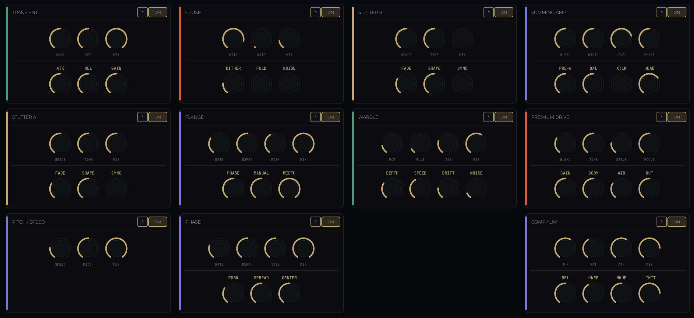

ATRIA is an instrument: immediate, playable, and emotionally reactive. Designed around the principle “Shape motion. Not parameters,” ATRIA replaces the effect rack with a three-ring macro system that redefines control as musical intent. The Macro Performance System is organized into three dimensions: • Left: Time. Governing drift, timing instability, and playback displacement. • Center: Motion. The groove dimension: rhythmic energy, and stereo spread. • Right: Energy. Physical impact: harmonic density, pressure, and saturation.

THE_MODULES
TRANSIENT
Transient is ATRIA’s pulse-shaping front end. It is designed to emphasize or soften the attack behavior of incoming material so the signal can feel tighter, more percussive, or more flowing before it enters the rest of the motion engine. In the ATRIA macro plan, the Pulse dimension is explicitly routed here first because it is one of the fastest ways to make the instrument feel immediately rhythmic and alive.
STUTTER A
Stutter A is the primary rhythmic interruption stage. It introduces gated movement and timing patterning early in the chain, giving ATRIA its immediate chopped, pulsed, and animated character. In the macro system, Pulse is routed here as part of ATRIA’s “immediate rhythmic identity” pass.
PITCH / SPEED
This stage handles playback displacement and identity shift. ATRIA’s Shift macro is defined as pitch and playback displacement with a centered neutral position, making this module the point where stable material can become warped, displaced, or time-stretched in a musically performative way. The current system treats this as the trickiest stage in the engine because it has the strongest effect on perceived level and identity.
CRUSH
Crush is the digital reduction stage in ATRIA’s motion chain. Earlier ATRIA builds defined it with bit depth reduction, rate reduction, and mix, making it the stage for turning clean signal into stepped, fragmented, or degraded texture without leaving the instrument’s performance framework.
FLANGE
Flange provides short-delay modulation, movement, and comb-filter animation. Earlier ATRIA DSP definitions describe it as a short delay with LFO modulation and feedback, giving it the role of adding width, sweep, and motion rather than pure coloration. In the macro system, Space is routed here as part of ATRIA’s width-and-movement layer.
PHASE
Phase is ATRIA’s spectral motion stage. Earlier ATRIA DSP definitions specify an allpass-based phaser with rate, depth, and stage controls, making it the counterpart to Flange: less about obvious delay motion, more about internal swirl, image movement, and phase-based animation. Space is routed here alongside Flange in the recommended macro order.
STUTTER B
Stutter B is the secondary rhythmic branch. In the simplified ATRIA architecture, it remains as the dedicated Chain B processor and feeds the summing stage before Warble and the output coloration path. Its role is not to mirror Stutter A, but to provide a second rhythmic voice that can be balanced independently against the main modulation path.
SUMMING AMP
The summing stage recombines ATRIA’s split movement paths before they continue into the master coloration chain. It is part of how ATRIA preserves clarity while still allowing layered modulation and rhythmic interference to feel unified rather than disconnected. The design language also classifies Summing with the modulation / master family in the ATRIA visual system.
WARBLE
Warble is ATRIA’s tape-style movement stage. Earlier ATRIA definitions describe it through wow, flutter, and age, combining LFO-driven motion with tonal softening and saturation behavior. In the macro system, Flow is routed here because Warble is one of the main engines for temporal drift and unstable motion.
PREMIUM DRIVE
Premium Drive is ATRIA’s main saturation and pressure stage in the current architecture. After the removal of earlier saturation modules, Premium Drive became the sole dedicated color stage, and the Energy macro is explicitly rewired toward it. Its purpose is to add harmonic intensity, weight, and physical pressure while keeping that behavior tied to performance rather than deep engineering.
COMP / LIM / LIMITER
ATRIA ends with a dynamics and protection stage. Earlier ATRIA DSP definitions describe this section with threshold, ratio, and attack behavior, followed by limiting at the output. In practice, this is the stage that turns movement and saturation into controlled impact so the instrument can stay bold and performative without collapsing into chaos.
PERFORMANCE_ENGINE
- Transient Shaping Pulse-shaping front end for immediate percussive articulation.
- Rhythmic Gating Dual Stutter stages (A/B) for timing instability and animated pulse.
- Playback Displacement Centered-neutral pitch and speed warping for identity shifts.
- Digital Degradation Bit/Rate reduction stage for fragmented textural movement.
- Tape Drift Wow and flutter modeling for temporal instability and tonal wear.
SPECIFICATIONS
- Platform macOS [AU / VST3]
- Category Creative FX Instrument
- Control Surface 3 Macro Rings + 2 Meta-Macros [Flow / Form]
- Dynamics Precision Compressor / Limiter / Final Output Wall
- Architecture Streamlined Performance-Focused Signal Flow